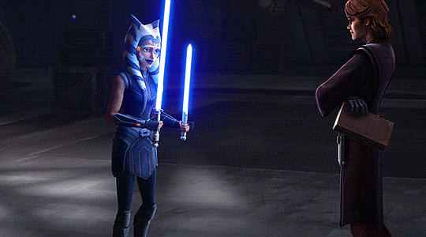
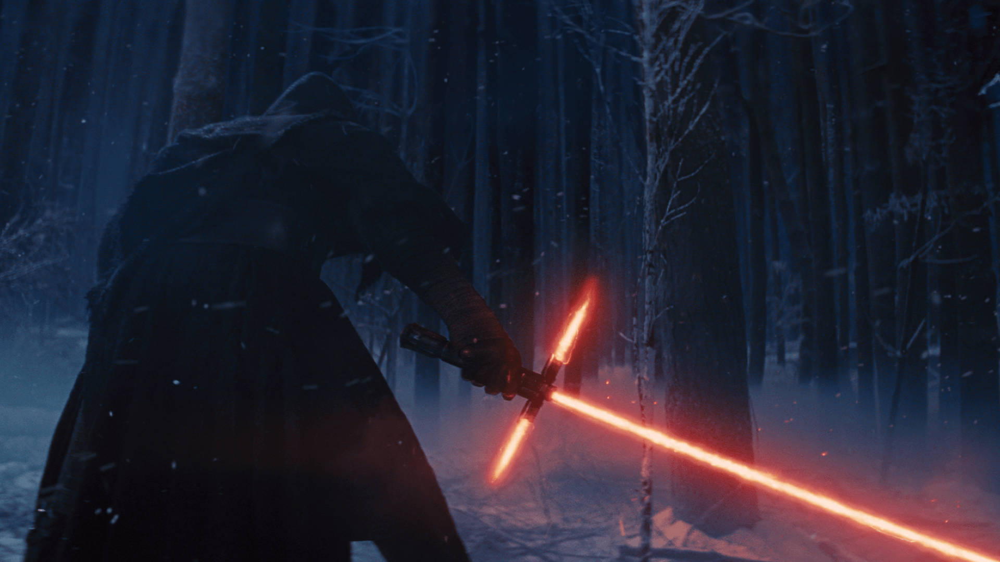

Evolution of the Lightsaber
The lightsaber, one of the most iconic symbols of the Star Wars universe, has undergone a fascinating evolution throughout the galaxy’s history. From the era of the Old Republic to the time of the sequels, this legendary weapon has seen significant changes in design, use, and symbolism, reflecting the shifting philosophies of its wielders.
During the Old Republic, lightsabers were used primarily by Jedi, and their designs were often more elaborate, reflecting the ancient traditions of the Order. Many lightsabers from this period had ornate hilts and unique modifications, customized to fit the user’s fighting style or connection to the Force. Double-bladed lightsabers, like the one used by Sith Lord Exar Kun, became more common among the Sith, emphasizing their aggressive and fearsome combat techniques. The Old Republic era saw lightsabers as more than just weapons—they were symbols of the wielder’s place in the Force, each blade a reflection of its user’s mastery.
As the Republic fell and the Galactic Empire rose, the design and use of lightsabers shifted dramatically. By the time of the prequels, the Jedi were seen using a more standardized design. The hilts were simpler and less adorned, suggesting a time when the Jedi Order was larger, more militarized, and less focused on individual expression. The lightsaber had become a tool for peacekeeping, often used in battle alongside clone troopers. During this period, Sith like Darth Maul wielded innovative designs, such as the double-bladed lightsaber, to reflect their ferocity and hunger for power.
The original trilogy represents a period of lightsaber scarcity. After the fall of the Jedi, lightsabers were mostly relics of the past, with only a few remaining in existence. Luke Skywalker’s lightsaber journey begins with his father’s blue-bladed weapon, symbolizing the passing of the Jedi legacy. Eventually, Luke constructs his own green-bladed saber, signifying his growth as a Jedi Knight and his individual path within the Force. The lightsaber, once a common tool for Jedi, had become a symbol of hope and resistance in the face of the Empire.
By the time of the sequels, lightsabers had once again evolved, both in design and symbolism. Kylo Ren’s unstable, crossguard lightsaber was a reflection of his inner turmoil and unstable connection to the dark side. Rey, a scavenger turned Jedi, wielded a reforged version of Anakin Skywalker’s lightsaber before crafting her own unique yellow-bladed saber, marking the end of one era and the beginning of another. In these films, lightsabers symbolize personal journeys and legacies more than ever before, reflecting the characters’ struggles and growth.
From the ornate hilts of the Old Republic to the unstable blades of the sequels, the evolution of the lightsaber mirrors the changes in the galaxy and the personal journeys of those who wield them. Each new design tells a story, representing the wielder’s relationship with the Force, their place in the galaxy, and the era they inhabit.
And remember: the Force will be with you. Always.
- Nathan J. Boquiren